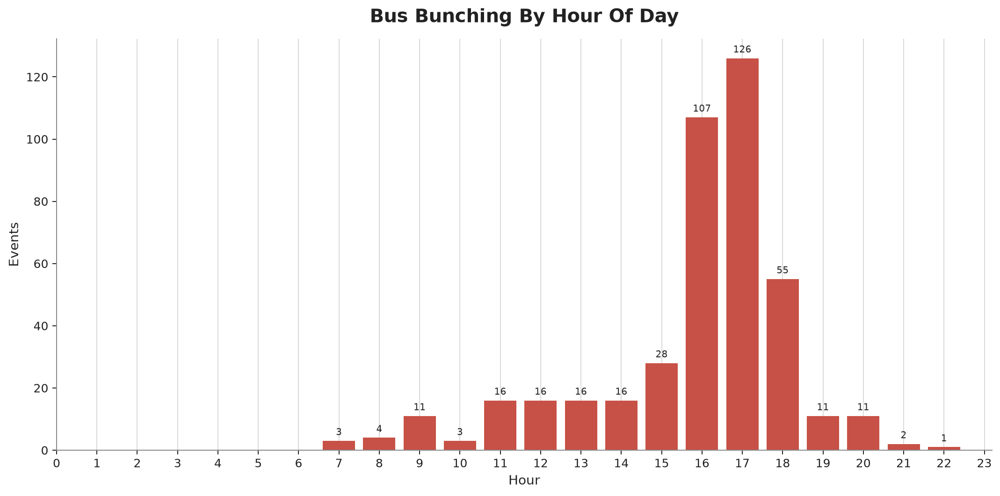
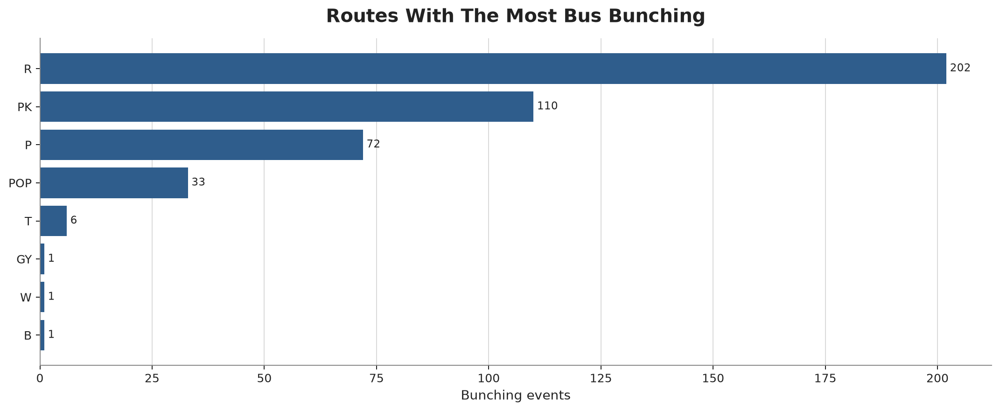
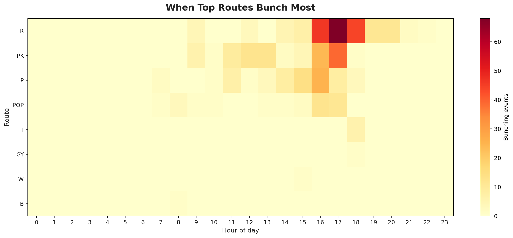
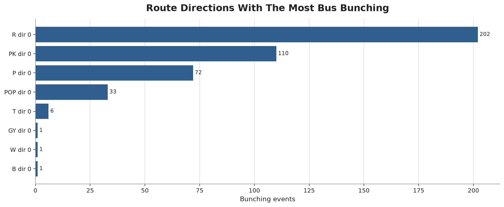
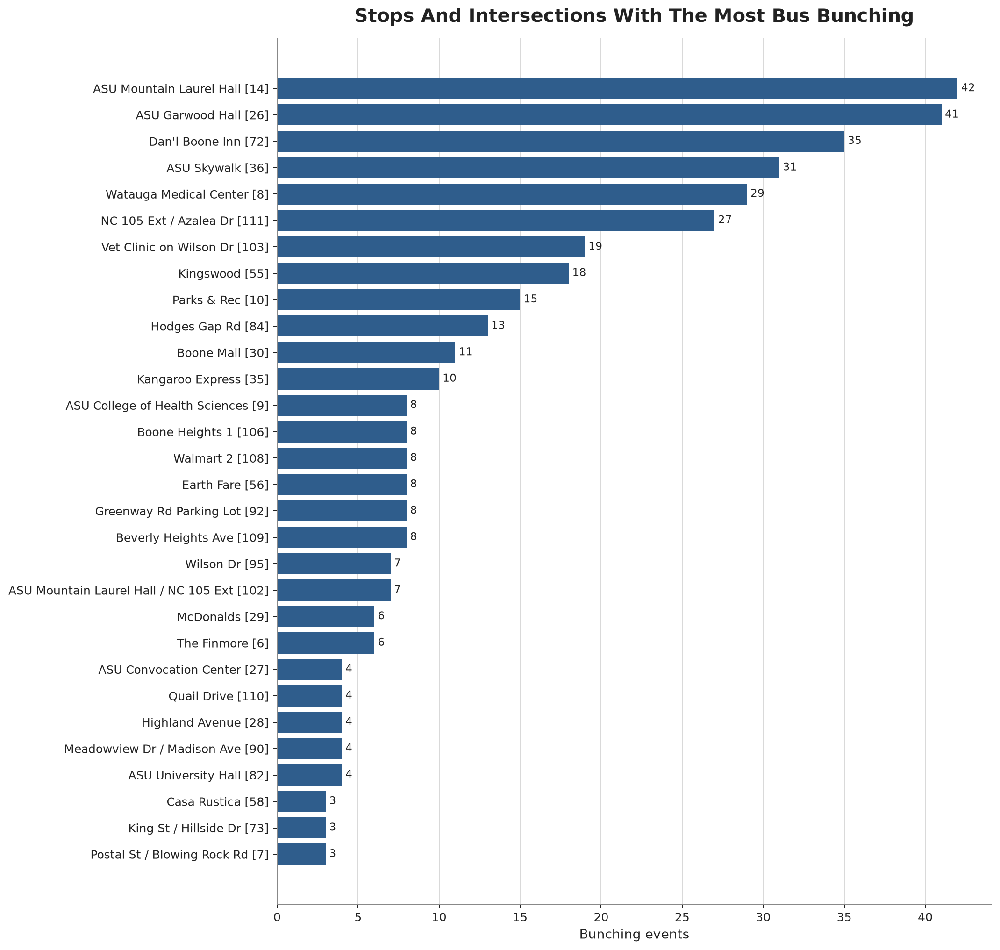

Bus bunching
Two buses on the same route and direction arrive too close together.
IP3 Partner Agency
Boone, North Carolina. Current bus-bunching observations from the GTFS-RT export.
AI Prediction
This prediction tool uses the representative AppalCART sample already gathered to flag what to look out for next: likely route, hour, and stop combinations for bus bunching based on the current time, day of week, and repeated observed patterns.
Use this view to decide where to look first and focus near-term monitoring.
No mapped prediction locations are available for this time horizon. This does not mean there is no bunching risk.
Larger markers have higher relative priority. Colors show High (red), Medium (amber), or Monitor (blue). Scores are historical-pattern rankings, not probabilities.
| Day | Route | Hour | Predicted location | AI priority | Prediction score | Evidence |
|---|---|---|---|---|---|---|
| Wed Oct 28 | R | 12:00 | ASU Mountain Laurel Hall / NC 105 Ext [102] | Monitor | 12/100 | 3 stop-level observations; same weekday history (Wednesday) |
| Wed Oct 28 | P | 12:00 | ASU Garwood Hall [26] | Monitor | 4/100 | 1 stop-level observations; same weekday history (Wednesday) |
| Wed Oct 28 | PK | 12:00 | ASU Mountain Laurel Hall [14] | Monitor | 4/100 | 1 stop-level observations; same weekday history (Wednesday) |
| Day | Route | Hour | Predicted location | AI priority | Prediction score | Evidence |
|---|---|---|---|---|---|---|
| Wed Oct 28 | PK | 17:00 | ASU Garwood Hall [26] | High | 71/100 | 17 stop-level observations; same weekday history (Wednesday) |
| Wed Oct 28 | R | 17:00 | Dan'l Boone Inn [72] | Medium | 46/100 | 11 stop-level observations; same weekday history (Wednesday) |
| Wed Oct 28 | R | 20:00 | Vet Clinic on Wilson Dr [103] | Medium | 46/100 | 11 stop-level observations; same weekday history (Wednesday) |
| Wed Oct 28 | R | 18:00 | Watauga Medical Center [8] | Monitor | 42/100 | 10 stop-level observations; same weekday history (Wednesday) |
| Wed Oct 28 | R | 19:00 | Dan'l Boone Inn [72] | Monitor | 29/100 | 7 stop-level observations; same weekday history (Wednesday) |
| Wed Oct 28 | R | 16:00 | NC 105 Ext / Azalea Dr [111] | Monitor | 25/100 | 6 stop-level observations; same weekday history (Wednesday) |
| Wed Oct 28 | PK | 15:00 | ASU Mountain Laurel Hall [14] | Monitor | 17/100 | 4 stop-level observations; same weekday history (Wednesday) |
| Wed Oct 28 | R | 12:00 | ASU Mountain Laurel Hall / NC 105 Ext [102] | Monitor | 12/100 | 3 stop-level observations; same weekday history (Wednesday) |
| Day | Route | Hour | Predicted location | AI priority | Prediction score | Evidence |
|---|---|---|---|---|---|---|
| Wed Oct 28 | PK | 17:00 | ASU Garwood Hall [26] | High | 71/100 | 17 stop-level observations; same weekday history (Wednesday) |
| Wed Oct 28 | R | 17:00 | Dan'l Boone Inn [72] | Medium | 46/100 | 11 stop-level observations; same weekday history (Wednesday) |
| Wed Oct 28 | R | 20:00 | Vet Clinic on Wilson Dr [103] | Medium | 46/100 | 11 stop-level observations; same weekday history (Wednesday) |
| Wed Oct 28 | R | 18:00 | Watauga Medical Center [8] | Monitor | 42/100 | 10 stop-level observations; same weekday history (Wednesday) |
| Wed Oct 28 | R | 19:00 | Dan'l Boone Inn [72] | Monitor | 29/100 | 7 stop-level observations; same weekday history (Wednesday) |
| Wed Oct 28 | R | 16:00 | NC 105 Ext / Azalea Dr [111] | Monitor | 25/100 | 6 stop-level observations; same weekday history (Wednesday) |
| Wed Oct 28 | PK | 15:00 | ASU Mountain Laurel Hall [14] | Monitor | 17/100 | 4 stop-level observations; same weekday history (Wednesday) |
| Wed Oct 28 | R | 12:00 | ASU Mountain Laurel Hall / NC 105 Ext [102] | Monitor | 12/100 | 3 stop-level observations; same weekday history (Wednesday) |
| Thu Oct 29 | PK | 16:00 | ASU Garwood Hall [26] | Medium | 50/100 | 12 stop-level observations; same weekday history (Thursday) |
| Thu Oct 29 | R | 16:00 | Watauga Medical Center [8] | Monitor | 42/100 | 10 stop-level observations; same weekday history (Thursday) |
| Fri Oct 30 | R | 18:00 | Walmart 2 [108] | Medium | 62/100 | 15 stop-level observations; same weekday history (Friday) |
| Fri Oct 30 | R | 17:00 | Kingswood [55] | Medium | 54/100 | 13 stop-level observations; same weekday history (Friday) |
| Sat Oct 31 | R | 14:00 | Dan'l Boone Inn [72] | Monitor | 12/100 | 3 stop-level observations; same weekday history (Saturday) |
| Sun Nov 1 | R | 17:00 | Dan'l Boone Inn [72] | High | 100/100 | 68 stop-level observations; all recent history |
| Sun Nov 1 | R | 16:00 | NC 105 Ext / Azalea Dr [111] | Medium | 68/100 | 46 stop-level observations; all recent history |
Priority scores compare each same-weekday route-hour pattern with the strongest pattern in the current export. High is 70/100 or above, Medium is 45-69/100, and Monitor is below 45/100.
Predictions are based on historical patterns, current time and day-of-week context, and available model inputs.
Patterns concentrate by route, hour, and repeated stop locations.
Top route: R. Busiest hour: 17:00.
These charts summarize the current AppalCART event export. Each row is a stop-level observation where two adjacent buses on the same route and direction were predicted to arrive closer together than the scheduled-headway threshold.
The current file covers 2026-08-24 to 2026-09-19 and contains 426 stop-level observations across 8 routes and 54 stops.
Counts are stop-level observations. A close bus pair can be counted at multiple downstream stops if it remains bunched along the route.
Shows how observations vary by service date in the current export. Spikes are useful review dates, not proof of a one-time external cause.

Shows when observations concentrate during the service day. Use the tallest bars to target schedule review, dispatch monitoring, or field follow-up.

Ranks routes by stop-level observations. Higher counts indicate where bus-bunching prediction should focus first in the current export.

Rows are routes and columns are hours of day. Hotter cells show route and hour combinations with more repeated stop-level observations.

Splits route totals by GTFS direction_id, which helps separate inbound and outbound patterns when the same route has different operating conditions by direction.
| Date | Hour | Routes | Observations |
|---|---|---|---|
| 2026-09-18 | 17:00 | 3 | 21 |
| 2026-08-25 | 16:00 | 3 | 17 |
| 2026-08-28 | 18:00 | 2 | 16 |
| 2026-09-02 | 17:00 | 2 | 15 |
| 2026-08-24 | 16:00 | 1 | 13 |
| 2026-08-24 | 17:00 | 1 | 13 |
| 2026-08-25 | 17:00 | 2 | 12 |
| 2026-09-10 | 16:00 | 3 | 12 |
| 2026-09-14 | 17:00 | 2 | 12 |
| 2026-09-14 | 12:00 | 1 | 11 |
Review observed bunching locations together with the GTFS route alignments.
Open route overlay mapOpen the interactive map to view stop locations and observation counts.
Open full interactive map
Ranks stops and intersections by repeated observations. These are useful candidates for field review, stop-area operations checks, or schedule timing review.
| Route | Observations | Top stop | At stop | Top hour | At hour |
|---|---|---|---|---|---|
| R | 202 | Dan'l Boone Inn | 35 | 17:00 | 68 |
| PK | 110 | ASU Garwood Hall | 25 | 17:00 | 39 |
| P | 72 | ASU Garwood Hall | 16 | 16:00 | 25 |
| POP | 33 | Hodges Gap Rd | 13 | 16:00 | 12 |
| T | 6 | ASU Mountain Laurel Hall | 3 | 18:00 | 6 |
| GY | 1 | Ivy Terrace | 1 | 18:00 | 1 |
| W | 1 | The Finmore | 1 | 15:00 | 1 |
| B | 1 | ASU Peacock Traffic Circle | 1 | 08:00 | 1 |
| Stop | Stop ID | Routes affected | Observations |
|---|---|---|---|
| ASU Mountain Laurel Hall | 14 | 3 | 42 |
| ASU Garwood Hall | 26 | 2 | 41 |
| Dan'l Boone Inn | 72 | 1 | 35 |
| ASU Skywalk | 36 | 2 | 31 |
| Watauga Medical Center | 8 | 2 | 29 |
| NC 105 Ext / Azalea Dr | 111 | 1 | 27 |
| Vet Clinic on Wilson Dr | 103 | 1 | 19 |
| Kingswood | 55 | 1 | 18 |
| Parks & Rec | 10 | 2 | 15 |
| Hodges Gap Rd | 84 | 1 | 13 |
Two buses on the same route and direction arrive too close together.
A detected bunching case at one stop and snapshot. One close bus pair may produce multiple stop-level observations as it travels along the route.
How close the buses were compared with the bunching threshold. Higher severity means the buses were closer together.
Repeat patterns by route, stop, day, or hour.
Spikes linked to incidents, detours, or other unusual operating conditions.
Weather is context for interpretation, not a causal finding.
No forecast rows available.
Observed AppalCART bus-bunching context from the current export.
0 stop-level observations.
No stop-level bunching observations were detected for this service date.
The current export does not show a higher-than-usual day.
3 stop-level observations.
All detected observations were on Route R at Dan'l Boone Inn in the 14:00 hour.
Below the observed-date median of 25 observations; the current export does not show a higher-than-usual day.